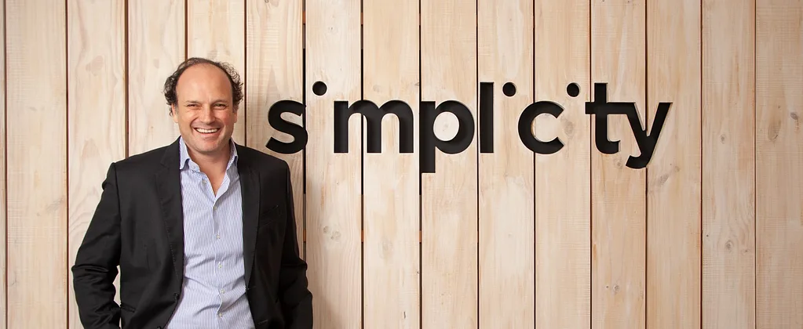
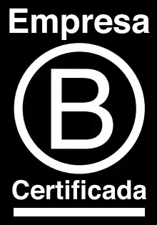

Nos atrevemos.
Pensamos.
Hacemos.
Nos apasiona trabajar con quienes definen lo
ESTO NOS APASIONA

Qué he
Qué he
aprendido
en
estos 10
años
Matías Cartajena
Socio Fundador & CEO
Nunca me ha gustado esto de escribir públicamente ni menos en primera persona. Soy de la escuela que los asesores no tienen que existir. El cliente es lo importante, no uno. Pero Simplicity cumple 10 años y me dieron ganas de romper la regla. (Hasta acá se ve, luego hay que apretar ver más o similar para seguir leyendo)
Acá van las respuestas al título y casualmente son 10
Porque queremos
no solo ser la mejor
empresa del mundo,
sino para el mundo.
somos la primera empresa Chilena de comunicaciones certificada como Empresa B y reconocida internacionalmente en las categorías Best for Governance y Changemakers.

